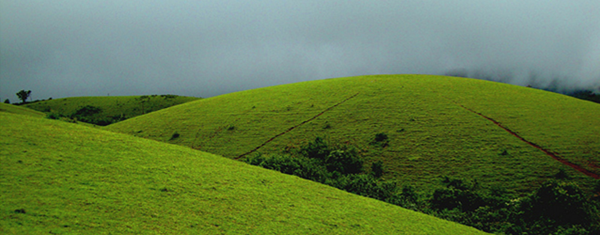

|  |
Vagamon or Wagamon is a hill station located in Kottayam-Idukki district of Kerala, India. Few area is located in Idukki district also. It has a cool climate, with the temperature between 10 and 23 °C during a summer midday. It is situated 1,100 metres above sea level Vagamon was discovered by the British who found the place ideal for tea plantations and they were followed by Christian missionaries who built their abode of service at Kurisumala in Vagamon. National Geographic Traveler has listed Vagamon on their directory of the "50 most attractive places to visit in India". |